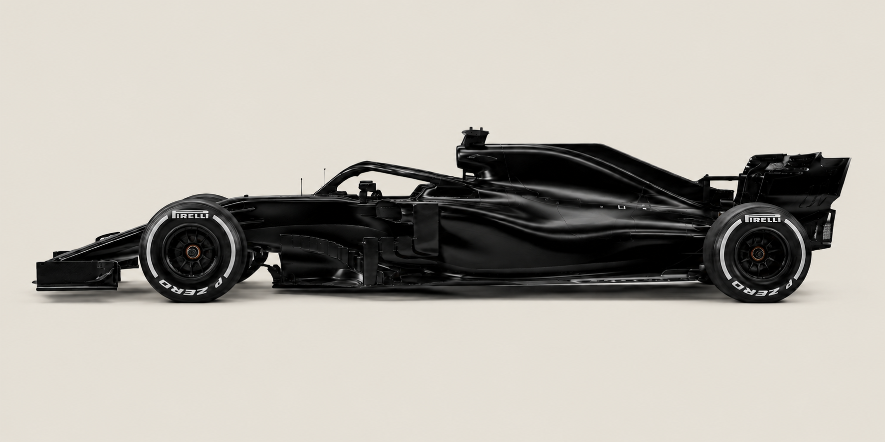
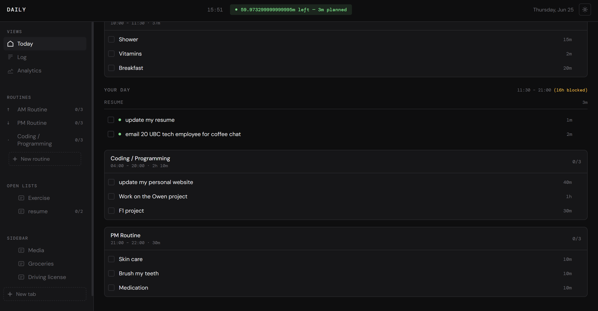

I am Daniel Norouzi, Business & Computer Science student at UBC
I'm currently looking for software engineering internships where I can build things people actually rely on.
I'm a Business and Computer Science student at the University of British Columbia with a passion for building practical software that solves real world problems.
I'm especially interested in software development, data analysis, and motorsports technology, and I enjoy creating projects that combine clean design with meaningful functionality. Right now I'm focused on sharpening my engineering fundamentals and looking for opportunities like testing and software roles, where I can contribute to products that ship to real people.
Outside of coding, I enjoy Formula 1, fitness, and constantly learning new technologies that help me grow as a developer.
What I build with
Languages
Frameworks & Libraries
Tools
Data & Analysis
Concepts
Practices
Currently on track
Two builds in progress one pulling real race data, one trying to make managing daily life feel less like a chore.

F1 Season Tracker
An object-oriented desktop app that records race results, updates driver and constructor standings, and displays championship progress through a live GUI.

Life Tracker (Calendar & Tasks)
A calendar app that organizes tasks into groups, aiming to make managing daily life feel as motivating as leveling up in a game.